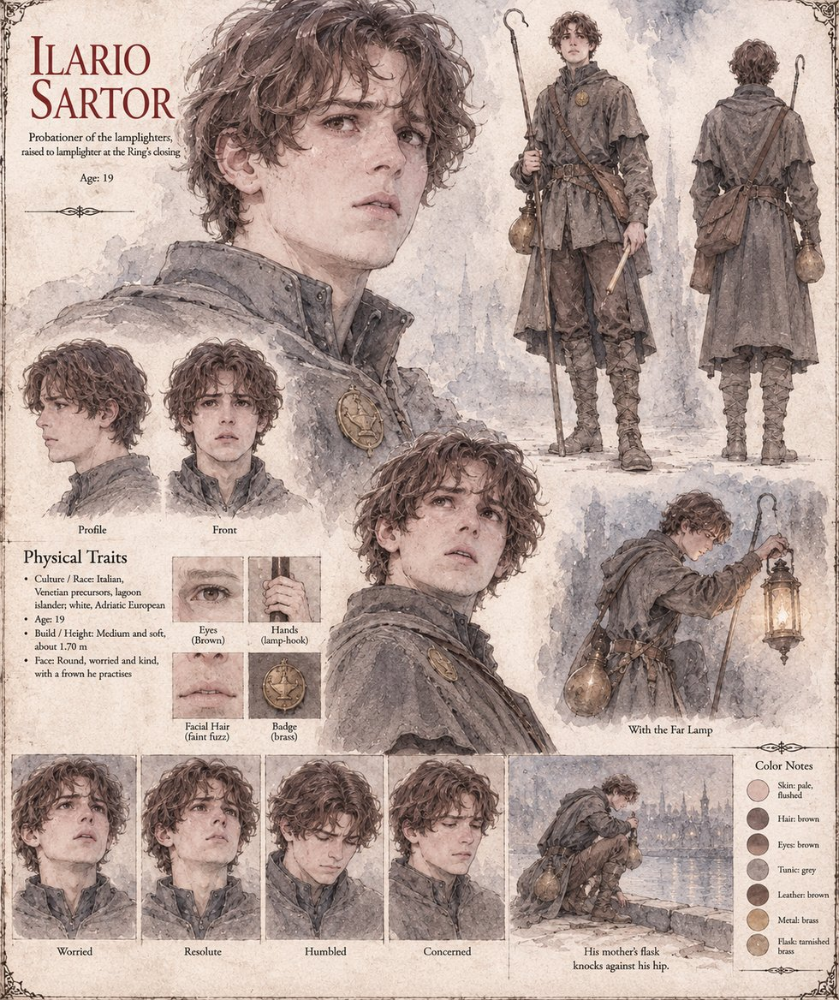

Ilario Sartor
Probationer of the lamplighters, raised to lamplighter at the Ring’s closing · carrier of the oil · Bruna’s son · 19
A round-faced, worried, kindly boy of nineteen, enrolled that spring as a probationer of the lamplighters and given the humblest of the offices in its gift: to carry the oil, three stoppered flasks in a padded satchel held against his chest. His mother Bruna counts him every evening from the seventh boat. On the third night of the river he cannot sleep and cannot say so; Nico carries the jar of shells forward and lays out the Tide Game on a barrel-head, and Ilario, who has never been asked to be anyone’s brother, says it does not seem to him like a game, since nobody could win it. On the afternoon the Ring is closed the Legate raises him to lamplighter with a handshake and a small brass badge, and he runs the final eleven lamps in a flat-out terror of dropping something, his mother’s soup-flask knocking against his hip, then stands beside the last lamp with the taper held out like a man who has delivered a message in a language he cannot read.
He shares the northern rota with Nico and hums a half-tone beneath his singing with such frightened accuracy that the two make a kind of chord. In the lamp-shed at Lamp Forty he practises a frown in a cracked mirror, anxious to be taken for twenty-five. On the twenty-first of Iverin Nico asks him to take the Far Lamp for the night; Ilario says You will owe me a night, and they shake on it. He takes Lamp Forty-One a little before dusk with a heel of bread and his mother’s flask, and thinks about three things in order: the soup, the lamp set slightly crooked, and whether Nico will remember the debt. Finding nobody to hum against, he sings alone, softly and a little flat, to the mountain, the only time in his life, and the one thing of his that is not replayed. A little after the tenth hour the flower opens at his feet, and the sexton counts thirty-one seconds. By dawn the lamp is found burning in a pool of its own spilled oil and he is entered in the parish book as Missing.
A lamplighter’s brass badge, one boot and the heel of a loaf are found beside the post and buried in the first row of the new Lit Ground. The Legate rules that Ilario died at his post, lit, so the Reclamation does not touch him. The next evening the hollow screams for nine seconds, and on the third night it speaks in Nico’s voice, calling his name. His mother carries the flask to the fence every evening and, when a foreigner takes it, says Ilario as a woman says the address on a parcel; the foreigner says it back, and says it again to a fence-post each night. At the Great Lighting the Listeners say his name among the first. His mother pours out a flask at Lamp Forty-One every twenty-second of Iverin.
The manuscript gives his age, his round, worried, kindly face, the practised frown, the oil satchel, the small brass badge and the flask; it gives no height, build, hair or eye colour. The sheet’s medium, soft build of about 1.70 m, brown hair and eyes, faint fuzz, pale flushed skin, grey hooded tunic, tall lamp-hook staff, and round brass flask at the hip (tarnished brass, which the manuscript does not say) are its own, as are its panels Worried, Resolute, Humbled and Concerned and its scene With the Far Lamp. In His mother’s flask knocks against his hip. the sheet crouches him by a stone quay edge at dusk with a lit town across the water; in the manuscript the flask knocks while he runs the last of the Ring. Its title strip and age follow the manuscript.
“like a man who has delivered a message in a language he cannot read”
Appears In

Related Subjects


Related Records

On the sixth night of the nine-day Translation of Focolare, the moths come out of the reeds on both banks in their hundreds and settle in halos of trembling white about every lantern on the water. Bortolo Zanni, the ferry-master, stands in the stern of the lead boat with one hand on the sweep; Nico and Ilario ride with the flame, and the islanders, who have never been visited at the flame by anything but the flame, stare upward.

On the third dusk in Val Muta the Ring is closed in what the settlers call simply the lighting. Gaudenzio says the three verses over the Hearth-Lamp and touches his taper to the flame, and the lamplighters carry the fire round the line in relays, a necklace of warm points assembling itself out of the dark. Ilario, raised to lamplighter that afternoon with a handshake and a small brass badge, runs the final eleven in a flat-out terror of dropping something.

On the twenty-first of Iverin, a little after the tenth hour, Ilario, nineteen, sits on the low stool beside the iron post of Lamp Forty-One, the Far Lamp, which he has taken for the night from Nico, and a warm, pale, many-lipped flower opens at his feet. He bends toward it as one bends toward a fire; the moths rise off the lamp and settle on its rim, and it takes thirty-one seconds by the count of the sexton, who watches from his fence and does not lift the shovel.